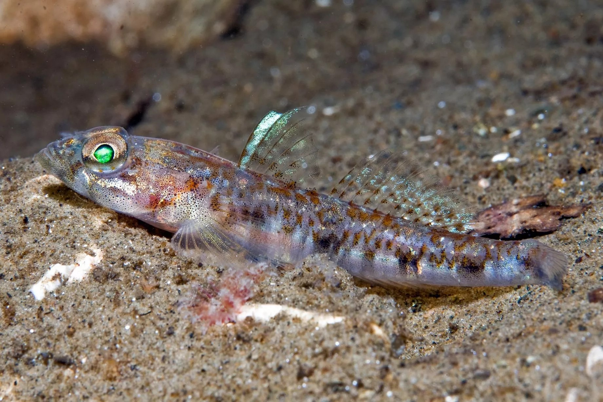
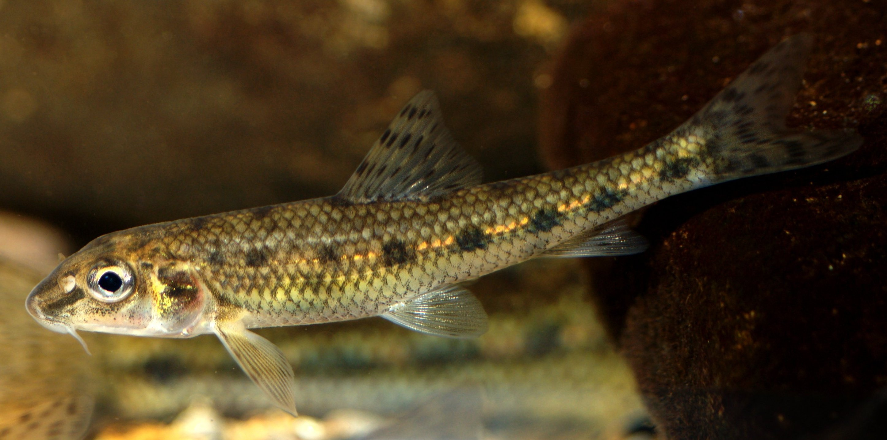
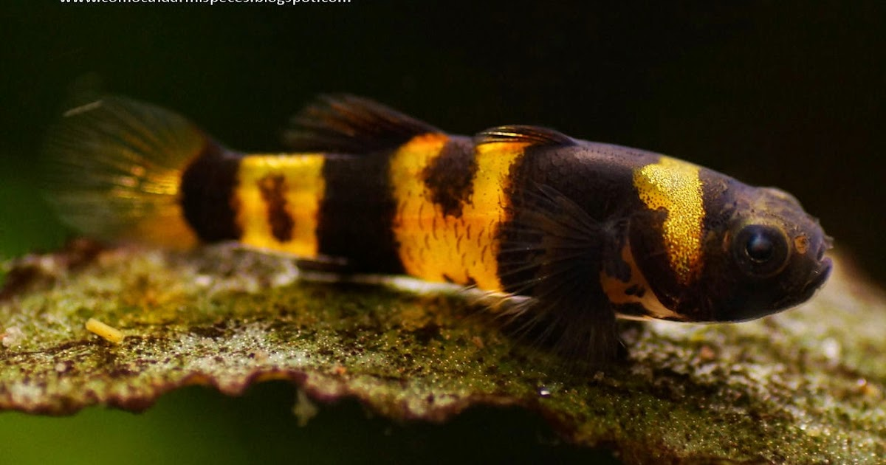

Estos peces se pueden encontrar en todas las aguas cálidas y saladas de nuestro planeta. No obstante, es posible encontrar gobios en agua dulce, puesto que se han adaptado muy bien. El pez gobio no es muy exigente en cuanto a su hábitat se refiere. Puede vivir tanto en las profundidades del mar, en matorrales o debajo de piedras.

El Pez gobio como mascota
Medidas para un acuario
Volumen del acuario: al menos 10 galones (37 litros)
pH: : En su hábitat natural, suelen habitar en aguas ligeramente ácidas a neutras, con un pH que oscila entre 6.5-7.5. Es importante monitorear regularmente el pH del agua del acuario y ajustarlo según sea necesario para mantenerlo dentro de este rango óptimo.
Temperatura del agua: Son peces tropicales que provienen de las cálidas aguas. Mantener la temperatura del agua dentro del rango de 24-28 °C (75-82 °F) es crucial para su salud y bienestar. Un calentador de acuario puede ser necesario para mantener una temperatura estable, especialmente en climas más fríos.

El Pez gobio como mascota
Medidas para un acuario
Sustrato: grava o arena en el fondo del acuario. Los gobios disfrutan excavando y buscando comida en el sustrato.
Filtracion: Un sistema de filtración eficiente es esencial para mantener la calidad del agua en el acuario. Los escalares son sensibles a la acumulación de desechos y requieren un agua limpia y bien oxigenada para prosperar. Se recomienda un filtro que pueda manejar el volumen de agua del acuario y proporcionar una filtración mecánica, biológica y química adecuada.
Escondites : Los gobios son tímidos y les gusta esconderse. Agrega rocas, cuevas y plantas para crear refugios. También puedes usar tubos o conchas para que se sientan seguros.

El Pez gobio como mascota
Medidas para un acuario
Alimentación: son omnívoros y aceptan una variedad de alimentos. Proporciona una dieta equilibrada que incluya alimentos comerciales para peces, como escamas o gránulos, así como alimentos vivos o congelados como dafnias, artemias y gusanos. Asegúrate de no sobrealimentar; dales pequeñas porciones varias veces al día.
Iluminacion:no requieren iluminación intensa. Proporciona una luz suave para simular su entorno natural.
Datos de improtancia
Otros datos de importancia de la especie
Longevidad
Pueden vivir alrededor de 5-7 años.
Reproduccion
Algunos gobios desovan huevos que son fertilizados externamente en el agua. Estos huevos eclosionan en larvas que flotan en la columna de agua. Otros practican la reproducción vivípara, donde las hembras retienen los huevos dentro de su cuerpo hasta que están completamente formados. Luego, dan a luz a crías vivas.
Frecuencia de reproduccion
Algunos gobios pueden reproducirse varias veces al año, mientras que otros pueden tener ciclos menos frecuentes.
Huevos y crias
Una hembra puede poner cientos de huevos en una sola puesta. Estos huevos son transparentes y adherentes, lo que les permite adherirse a la superficie donde son depositados. Los padres cuidan activamente los huevos y las crías, protegiéndolos de posibles depredadores y proporcionándoles alimento. Durante los primeros días de vida, las crías se alimentan de las reservas de nutrientes contenidas en el saco vitelino, y luego comienzan a consumir pequeños organismos y alimentos vivos. Los padres también pueden secretar sustancias nutritivas de su piel para alimentar a las crías durante los primeros días de vida.
Estado en la naturaleza
Los gobios se encuentran en una amplia variedad de hábitats acuáticos, desde arrecifes de coral hasta aguas dulces y salobres. Forman parte importante de los ecosistemas acuáticos y desempeñan roles como depredadores, limpiadores y polinizadores.Su estado en la naturaleza varía según la región y las amenazas ambientales. Algunas especies de gobios están en peligro debido a la degradación de su hábitat y la pesca excesiva.
Anatomia
Coloracion
La coloración puede variar según la variedad, pero generalmente tienen tonos plateados o plateados con rayas verticales oscuras. También hay variedades de colores más vibrantes y patrones más complejos, criados selectivamente en cautiverio.
Cuerpo
Tiene un cuerpo comprimido lateralmente y algo ovalado en forma. El cuerpo es alto y extendido, con aletas largas y esbeltas.Los peces ángel pueden alcanzar longitudes de hasta 15 centímetros en la naturaleza, aunque a menudo son más pequeños en acuarios debido a la limitación del espacio.
Aletas
Posee aletas largas y espectaculares, características de los peces ángel. Esto incluye aletas dorsal y anal extendidas, así como aletas pectorales y caudal amplias.
Cuerpo
Parte ventral más o menos plana, dorso convexo y obscuro